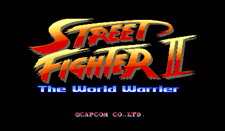
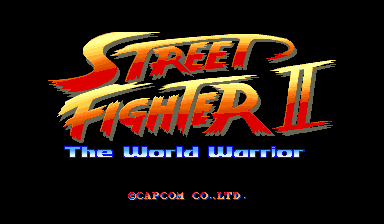

This article is part of a series about Street Fighter II and the CPS-1. It is recommended to read the previous entries before reading this one.
One of my favorite anecdote about Street Fighter II is Akiman's account of an issue discovered shortly before shipping.
Just three days before the deadline, I discovered something horrible. I had made a mistake with the subtitle “World Warrior”, mis-spelling it “World Warrier.”A recreation of the problem. Ouch!
- Akiman, Lead graphic design on SF2 (translated by Shmuplation)
To fully understand the issue, we need to dig into how the arcade hardware works. The CPS-1 is a super tile drawing machine. It can draw a lot of tiles but cannot alter them. They are taken from the GFX ROM as they are and sent to the screen (although they can be flipped horizontally or vertically).
The GFX ROM and the 68000 instructions ROM as burned separately. The problem Akiman describe is that the GFX ROM had been burned but he could still make changes to the instructions.
But how could he fix the mistake if the artwork was set in stone at this point?
Now I can safely tell this story too, but we actually didn’t discover it until several months after all the sprite work had been done. Since the logo had already been created, I couldn’t just go in and change the letter at this point.
"Maybe I can just force it to look like an ‘o’," I thought. I tried layering various other sprites over it until finally, it looked like an ‘o’. Phew!
- Akiman, Lead graphic design on SF2 (translated by Shmuplation)
Akiman description of the solution left me wanting more details. How did he turn an 'e' into an 'o'? Since I had a sheet extractor, I looked for the text and sure enough, the logo and the typo were found on sheet 0x7B00.
The logo is drawn via 16 draw calls using tiles 0xC8, 0xC9, 0xCA, 0xCB, 0xCC, 0xCD, 0xCE, 0xCF, 0xD8, 0xD9, 0xDA, 0xDB, 0xDC, 0xDD, 0xDE, and 0xDF.
The way Akiman solved his problem show that you have to be practical in order to ship. He noticed that there was an 'or' in 'World' which would kinda fit in place of the 'ier'. So, he dropped the three last tiles 0xDD, 0xDE, and 0xDF and replaced them with 0xCD and 0xCE.
That was better but it only displaced the problem since the borrowed right leg of the 'W' looked like an 'l' instead of an 'i'. The logo now read 'The World Warrlor'.
At this point, what was needed was a way to slice the top of the 'l' to make it look like a dot on top of an 'i' but how could he do that since the 68000 cannot write in a tile?
The last part of the puzzle comes from Guile's calves. If you look closely at tile 0x96 you will notice that it has only one pixel visible in the lower left corner.
|
| ||||||||||||||||
| Guile palette | ||||||||||||||||
|
| ||||||||||||||||
| World Warrier palette |
Something that I omitted to mention earlier is that the palette management is entirely under the 68000 control. The CPU is free to issue a tile drawing command using whatever palette it pleases.
Guile's green palette is not useful since the logo uses blue colors. But if we place them side by side, we notice that index 14 is dark green in Guile's palette but dark blue in the logo palette.
Using tile 0x96 with the logo palette allows the 68000 to have a (very expensive) system where 255 pixels are wasted to transparency but the 256th can be used like a pencil.
That pencil-tile is used to issue three draw command with coordinates overlapping the 'l'. This effectively creates a line which cuts the top part and make it look like the dot at the top of an 'i'.
If you ever wondered why the 'i' of 'Warrior' looked weird all these years, now you know.
 Et voila!The typo was fixed in later versions of Street Fighter 2 where the "World Warrior" set of tiles features a proper "IOR".
Ironically these are not used since the sub-title was changed from "World Warrior" to "Champion Edition" and then "Hyper-fighting".